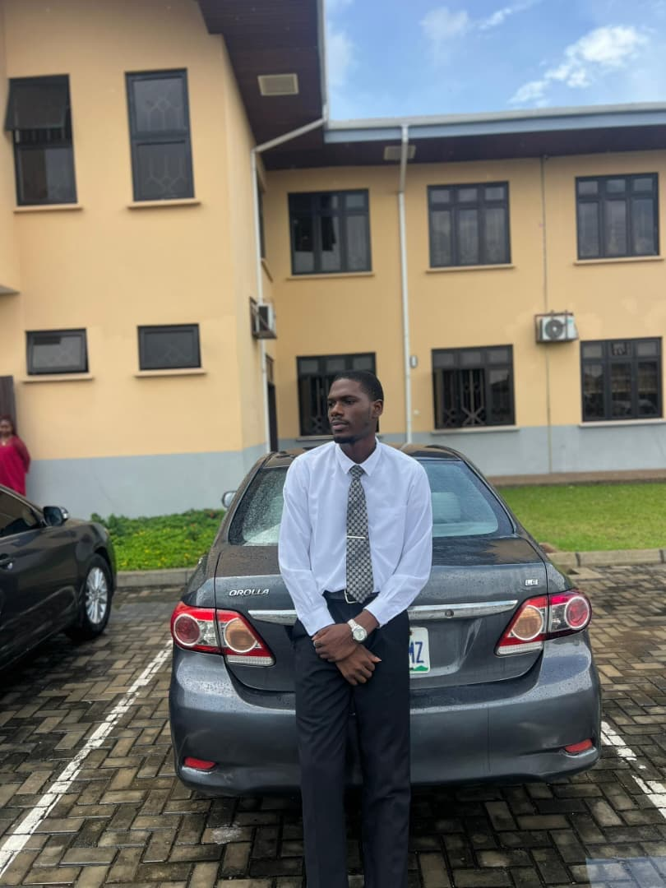

Crux Okolo | WDD 130

Hello, I am Crux Okolo. I am from Edo State, Nigeria. I enjoy playing football. I am currently enrolled in this course and I am excited to be taking it!

Hello, I am Crux Okolo. I am from Edo State, Nigeria. I enjoy playing football. I am currently enrolled in this course and I am excited to be taking it!